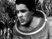
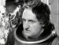
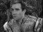
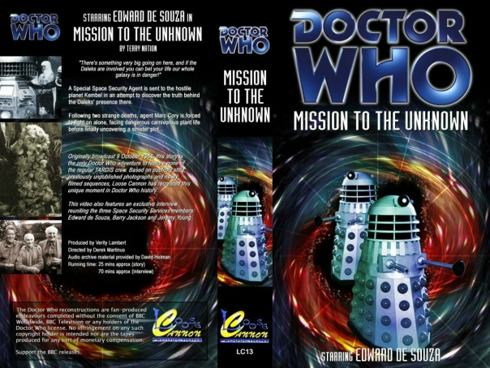
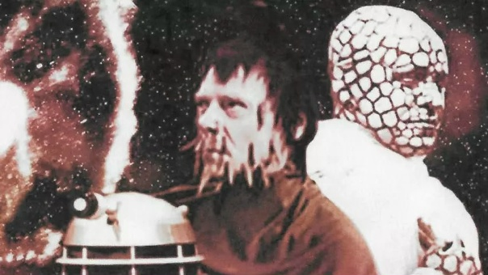
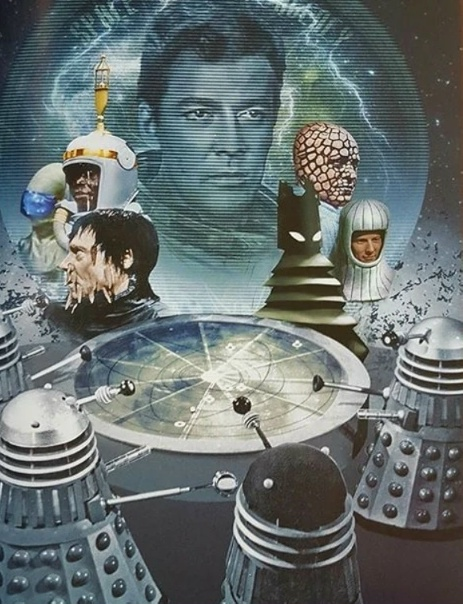
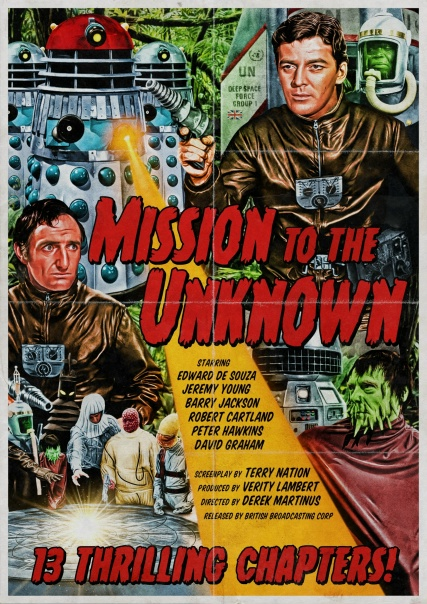
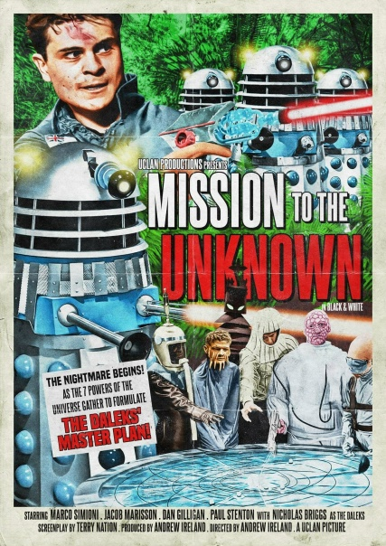

Эра Первого Доктора (3 сезон)
<<< НАЗАД ||| 2. Миссия в неизвестное ||| ДАЛЬШЕ >>>
Субтитры: Русские |  |
Субтитры: отсутствуют | |
Субтитры: отсутствуют | |
Субтитры: Русские | |
Субтитры: Русские | |
Субтитры: отсутствуют | |
Отрывок: Шипы Варга (themindrobber)
9 октября 1965
25 минутный эпизод
| 1. Миссия в неизвестное | Серия утеряна * Имеется реконструкция * Имеется анимационная версия * Имеется воссозданная версия |
|---|
 |  |  |
«Миссия в неизвестное» — напряжённая история без Доктора: агенты на планете Кембел сталкиваются с коварной угрозой — растениями Варга, сводящими с ума, и раскрывают масштабный план далеков. Герои пытаются отправить сигнал бедствия, но время и ресурсы стремительно тают. Серия работает как тревожный тизер: она нагнетает атмосферу, показывает далеков как вселенскую опасность и готовит почву для «Генерального плана далеков».
 LC recon - сентябрь 2000 |
|---|








